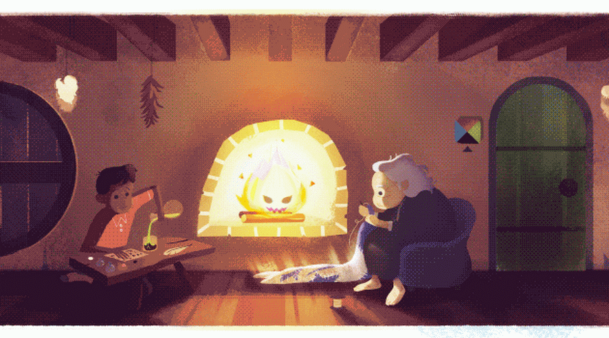
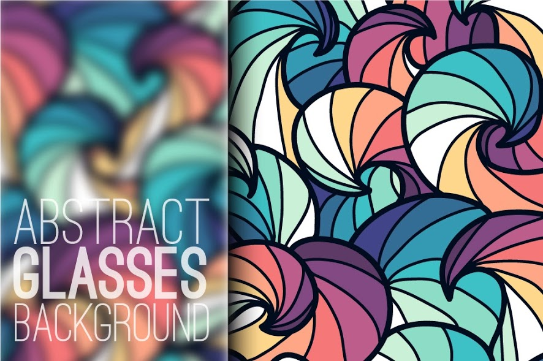
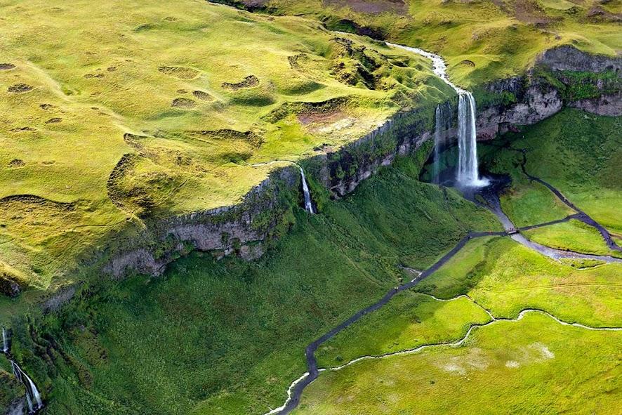
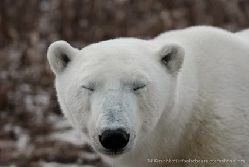
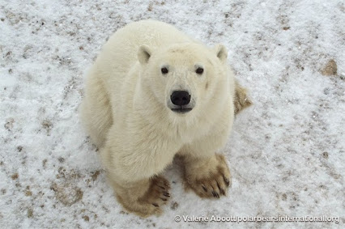

Gonster
昨天是幻想作家Diana Wynne Jones's的80岁诞辰
下面是google的插画动画 Howl's Moving Castle
跟宫崎骏版本不同的画风

CCAV的再创辉煌,话说游标卡尺上面两个卡刃是做什么的0 ，0
简单的模糊效果+文字+一张好看的背景图片=一个意外抓人眼球的页面

好想去这里看看- -|。。

萌呆的大白熊


好像很好吃的样子（¯﹃¯）
(╯‵□′)╯︵┻━┻